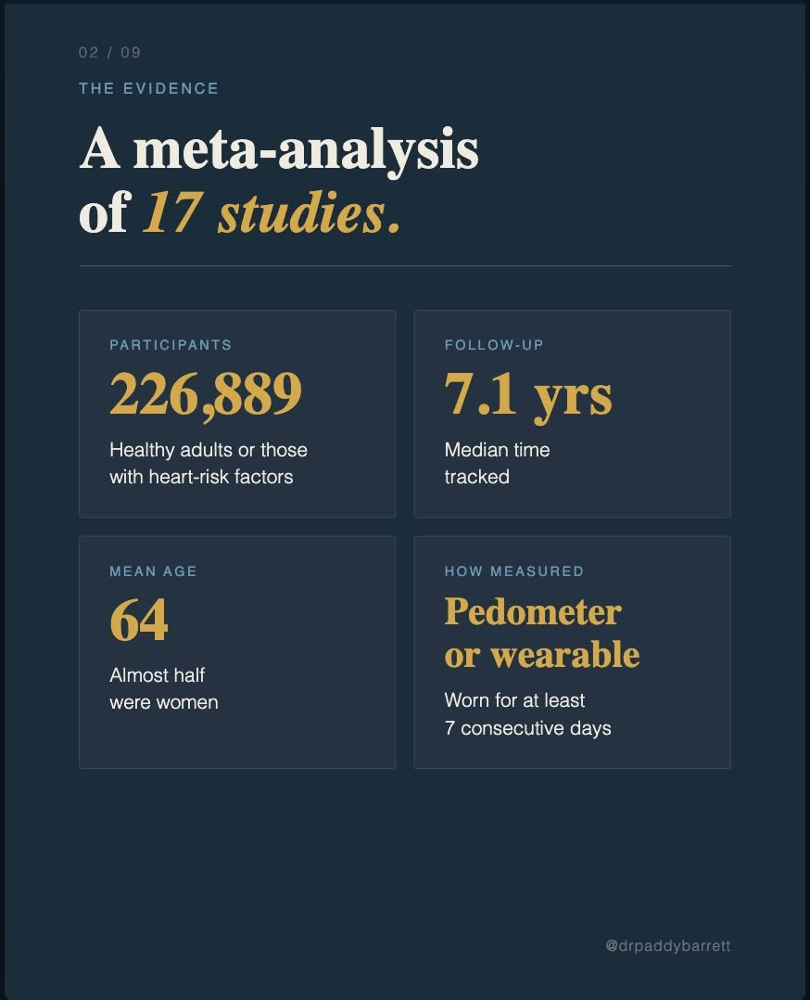
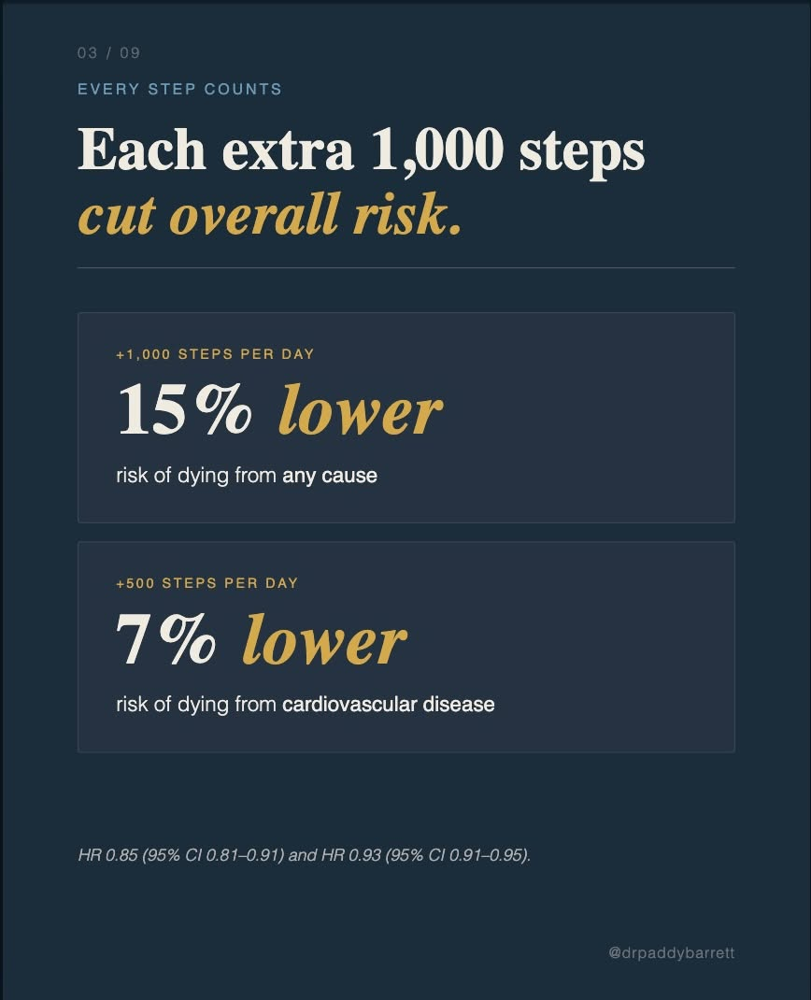
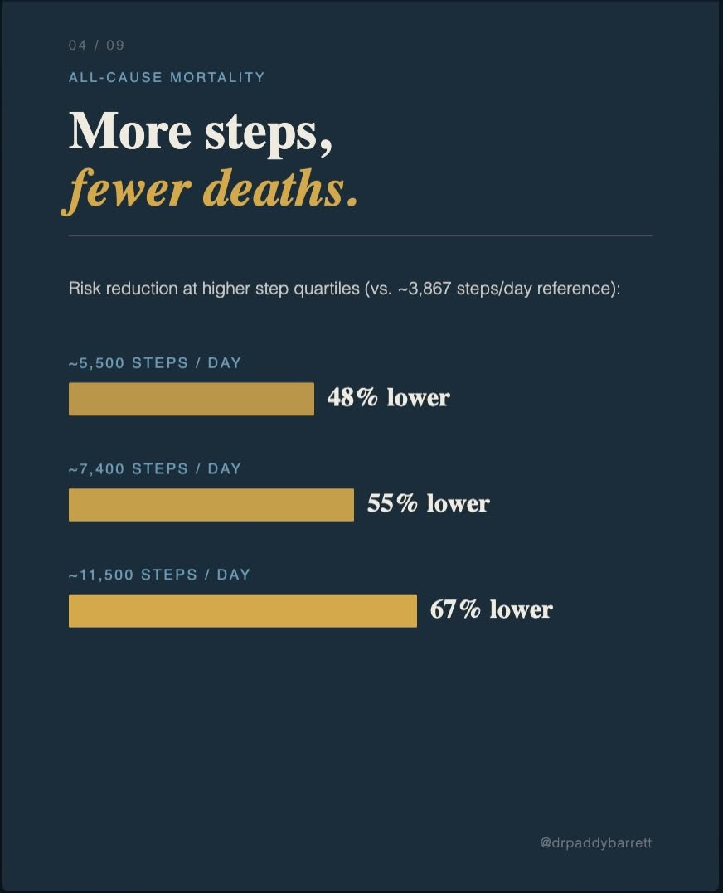
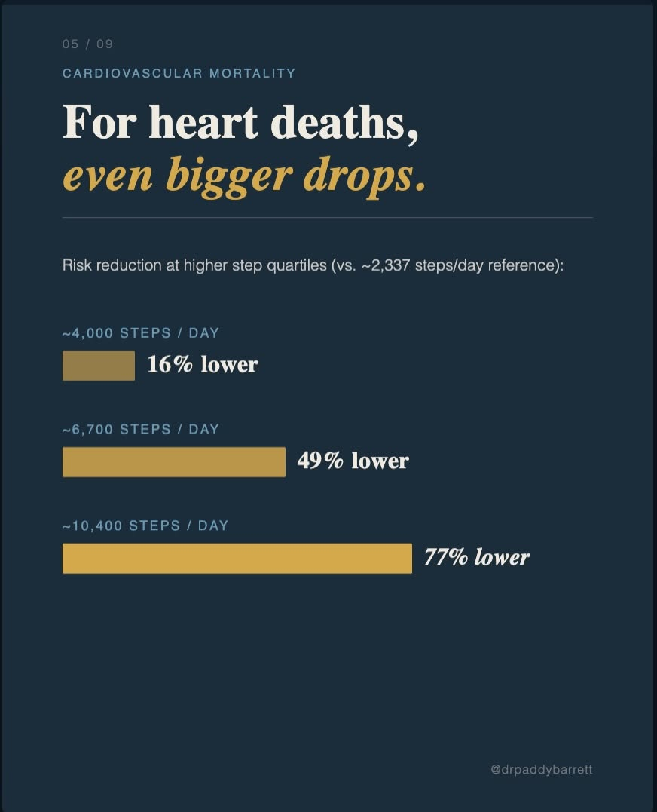

Walking has a major benefit, in terms of reducing risk of dying from CVD.
If you do no other exercise… at least walk.
The benefit is large, compared to doing nothing.
Louis shares a 2023 meta-analysis of 17 studies and 226,889 adults: benefits begin around 4,000 steps with no plateau up to 20,000.
Walking has a major benefit, in terms of reducing risk of dying from CVD.
If you do no other exercise… at least walk.
The benefit is large, compared to doing nothing.
Walking might be the simplest, most underrated heart-health tool we have. A 2023 meta-analysis of 17 studies and 226,889 adults found every extra 1,000 daily steps was linked to a 15% lower risk of dying from any cause, and every extra 500 steps to a 7% lower risk of cardiovascular death. At around 10,400 steps a day, the risk of cardiovascular mortality was nearly 80% lower than at the lowest step counts — with benefits starting from as few as ~4,000 steps and no plateau seen even up to 20,000. You don’t need to chase 10,000 from day one. Start where you are, add 1,000 a day, and the data suggest the benefit just keeps building. For weekly actionable insights on preventing heart disease, sign up for my free weekly newsletter — just put the word NEWSLETTER in the comments below and we’ll send you all the details. Source: Banach et al., European Journal of Preventive Cardiology, 2023.




Louis points to prior posts collating randomized trials showing plaque regression with statins, ezetimibe, PCSK9 inhibitors, colchicine and high-dose EPA. Tags reference trials such as ASTEROID, GLAGOV, PACMAN-AMI, EVAPORATE and LODESTAR. The post itself is mainly a pointer to those earlier posts.

A year-long study found adults walking 40 minutes three times weekly had hippocampal growth, while stretching-only participants lost about 1-2% of hippocampal volume.

William Wallace explains that sitting after eating relies on insulin signaling, while moving activates GLUT4 transporters through muscle contraction, so glucose enters muscle faster with lower peaks and less pancreatic demand. Louis shares it as a rationale for post-meal walking.

Louis highlights that big mortality reductions appear at lower step counts than expected, especially for sedentary people.

Louis shares Dean Ornish's advice that consistent daily movement like walking lowers blood pressure, improves insulin sensitivity and reduces inflammation.

A study of 5,416 US women aged 63-97 without prior heart disease, using accelerometers, links more time spent on housework, gardening, cooking and self-care with lower cardiovascular risk. Louis notes that reverse causality is likely but that avoiding sedentary time probably lowers risk.